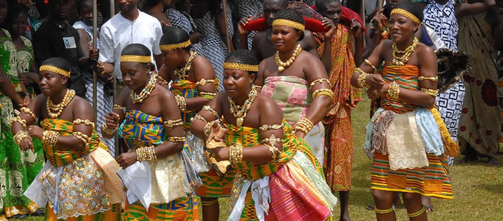
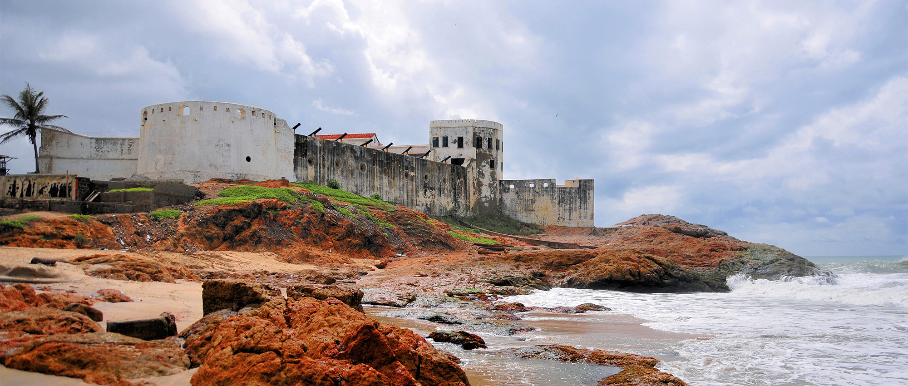
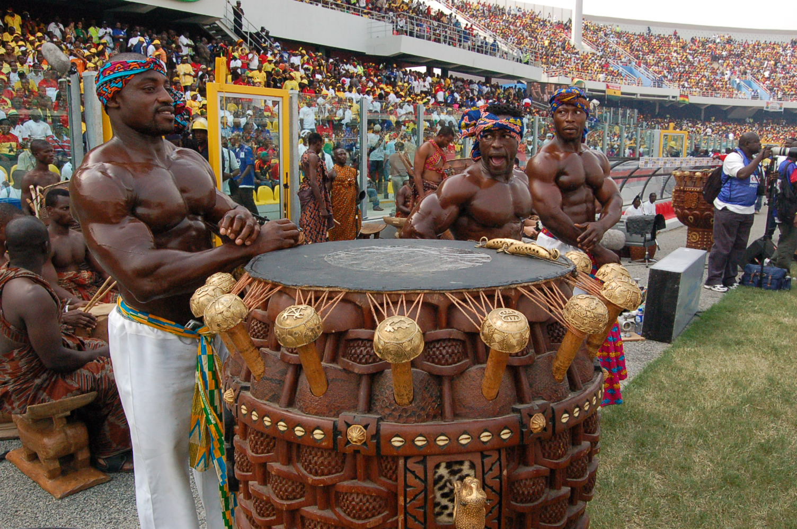

Ghana pulsates with life. From the bustle of downtown Accra to the atmospheric adobe villages of the north, from the ancient Kingdom of Asante to the mediaeval mosques of Larabnga and Bole, it is a country whose immense cultural diversity both thrills and fascinates visitors, drawing them into a daily rhythm that is uniquely and unmistakenly African. A common feature of all Ghanaian cultures is a love of festivals . Barely a week goes without one or other town or village holding its major annual celebration, while everyday personal events such as funerals, name-giving ceremonies and weddings tend also to be imbued with something of a carnival atmosphere.
The normal starting point for exploring Ghana is the historical capital Accra, one of the safest and most navigable of African cities, and brimming with interest. Accra's atmospheric older quarters Usshertown and Jamestown are characterized by an architectural cocktail spanning several centuries, spiced with striking landmarks such as the 17th century Osu Castle and Jamestown Lighthouse, the more modern Independence Arch and Nkrumah Mausoleum, and the lively fishing market. Modem Accra is epitomized by Cantonments Road, more widely known as Oxford District, Accra's hip downtown with bustling shops, handicrafts, fabrics, hotels, restaurants, etc.
Ghana's second city Kumasi, is the traditional capital for the Asante people, heirs to a centuries-old kingdom that once sprawled from its core in central Ghana into what are nor Cote d'Ivoire, Togo and Burkina Faso. Better known to outsiders as Ashanti, Asante was the last and most enduring of a succession of centralized states that controlled the goldmines of Obuasi, though its wealth and influence was also linked to the ample supply of captives it provided to coastal slave traders. Traditional Ashanti landmarks include a beautiful 300-year old fetish shrine at Besease, the royal kente weaving village of Bonwire, and Manhyia Palace, where the Asante King sits in session every sixth Sunday, heralded by a procession of dignitaries and a fanfare of exuberant drumming and horn blowing that capture the pageantry of Asante's past.
 There is also the coastal Fante Kingdom, Asante's southern counterpart and traditional rival, centered on Mankerssim and incorporating the ports of Cape Coast, Elmina, Anomabu Saltpond and Winneba, where local fishermen still ply their trade in colorful pirogues, and life is ruled by the whimsical winds and tides of the ancient Atlantic. The north of Ghana, by contrast, has strong cultural links to the sandy Sahel, clearly visible in the local style of dress, a strong Islamic influence dating back to mediaeval times, and the captivating mud architecture of villages such as Paga, Sirigu and Larabanga.
2019 has also been dubbed as the 'Year of Return' marking 400 years of the of the first enslaved African arriving in Jamestown Virginia. The Ghana Tourism Authority (GTA) under the Auspices of the Ministry of Tourism, Arts and Culture is leading the project in collaboration with the Office of Diaspora Affairs at the Office of the President, the Panafest Foundation and the Adinkra Group of USA.
The Year of Return seeks to make Ghana the focus for millions of African descendants reacting to their marginalization by tracing their ancestry and identity. By this, Ghana becomes the beacon for African people living on the continent and the diaspora.
The United States Congress recently passed an Act H.R. 1242 - 400 Years of African-American which is a historically significant milestone. Ghana's unique position as the location for 75 per cent of the slave dungeons built on the west coast of Africa and the current President's policy of making it a national priority to extend a hand of welcome back home to Africans in the diaspora cannot be over emphasized.
There are still numerous imposing European forts and castles harboring harrowing reminders of intense and complex history of the Trans-Atlantic slave trade in our land over centuries. This on its own has made Ghana the focus for millions of African descendants reacting to their marginalization by tracing their ancestry and identity.
Even more important is the recognition of Ghana as a beacon of hope for African people living on the continent and in the Diaspora. This status was earned not by coincidence but by conscious efforts to validate the struggles, strengths and linkages between African descendants on a Pan-African scale.
This makes Ghana a great place to celebrate world heritage and culture at the Miss Heritage Global 2019. We look forward to seeing you there!